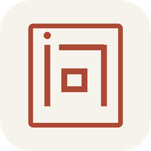
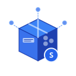
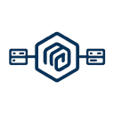
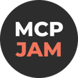

Best AI agents for building MCP servers (2026)
Tools and SDKs for building, hosting and publishing your own MCP servers. We list 40 tools for building MCP servers below, each with a link-checked page, pricing as the maker states it and alternatives.
Updated
40 tools: 34 open source, 1 source-available, 3 free or freemium, 1 paid, usage-based or enterprise, 1 pricing on the maker's site.
Agent frameworks and SDKs (19) See the full list →
PhoneUse
PhoneUse gives AI agents phones of their own to operate. Agents get cloud Android phones that boot in seconds and scale to hundreds, or real retail iPhones and Androids in a San Francisco rack, tapped by a robot stylus, for apps that detect emulators, with real carrier numbers for SMS and 2FA codes. One MCP server with tools such as acquire, read screen, tap, type, swipe, open app and read SMS plugs into Claude, Cursor, Codex or Windsurf, and there is a Python SDK and REST API. On-demand cloud phones are billed per minute, with flat monthly prices for dedicated and real phones.
Added
Pi
Minimal, extensible open-source terminal coding agent and agent toolkit from Earendil, with a multi-provider LLM API, TypeScript SDK, RPC mode and installable extensions, skills and themes.
Added
OpenAI Agents SDK (Python)
OpenAI's Python SDK for building multi-agent workflows; v0.23.0/0.23.1 released Oct 1-2.
Added
FastMCP
Pythonic framework for building MCP servers and clients quickly.
Added
MCP Python SDK
Official Python SDK for building Model Context Protocol servers and clients.
Added
MCP TypeScript SDK
Official TypeScript SDK for building MCP servers and clients.
Added
mcp-use
Full-stack MCP framework for building MCP servers, MCP apps and agents that connect to them.
Added
Claude Agent SDK (Python)
Anthropic's Python SDK for building agents on Claude Code's agent loop, with the CLI bundled, custom tools and hooks.
Added
MCP Go SDK
Official Go SDK for building Model Context Protocol servers and clients, maintained with Google.
Added
MCP C# SDK
Official C# SDK for building MCP servers and clients, maintained with Microsoft.
Added
MCP Rust SDK
Official Rust SDK for the Model Context Protocol.
Added
Antigravity SDK
Google's Python SDK for building stateful AI agents powered by Antigravity and Gemini, abstracting the agent loop and runtime.
Added
MCP Java SDK
Official Java SDK for MCP servers and clients.
Added
TanStack AI
Type-safe, provider-agnostic TypeScript SDK for chat, tool calling and agents.
Added
NitroStack
TypeScript framework with decorators and dependency injection for building, testing and deploying MCP servers and MCP apps, with a companion desktop studio.
Added
Workflow SDK
Vercel's TypeScript SDK for building durable, reliable and observable apps and AI agents.
Added
Skybridge
Full-stack TypeScript and React framework for building MCP Apps and ChatGPT Apps.
Added
MCP PHP SDK
Official PHP SDK for building MCP servers and clients, maintained with the PHP Foundation and Symfony.
Added
MCP Kotlin SDK
Official Kotlin Multiplatform SDK for building MCP servers and clients on JVM, Native, JS and Wasm, maintained with JetBrains.
Added
MCP gateways and registries (14)
MCP Gateway
MCP Gateway is a reverse proxy and management layer for MCP servers, enabling scalable, session-aware stateful routing and lifecycle management of MCP servers in Kubernetes environments
Added
Xpander.ai
Run and govern enterprise AI agents and employee AI inside your own environment, on any model. AI gateway, MCP gateway, agent runtime, and AI workspace in one platform
Added
Midplane
YC-backed MCP gateway between AI assistants and Postgres that checks every SQL statement against your policy, blocks unfiltered writes, masks sensitive fields, asks for human approval and logs everything inside your network.
Added

Wenbu
Wenbu is a hosted Streamable HTTP MCP server (wenbu 1.5.0 at wenbu.app/mcp, listed in the official MCP Registry as app.wenbu/mcp) and web app for traditional Chinese cultural systems and reflection. Connect Claude, Cursor or any MCP client with no API key required to call seven tools—calculate_bazi, cast_iching, draw_tarot, calculate_ziwei, search_library, read_library and get_daily_card—or run the MIT-licensed server locally.
Added
LiteLLM
Open-source AI gateway and Python SDK that calls 100+ LLM providers in the OpenAI format, with cost tracking, guardrails, load balancing and logging.
Added
MCP Registry
Official community-driven registry service and API that lists Model Context Protocol servers for MCP clients, like an app store for servers.
Added

SkillHub
Self-hosted registry for publishing, versioning and governing agent skill packages across an organization, with RBAC and audit logs.
Added
ContextForge
IBM's gateway and registry that fronts MCP, A2A and REST APIs with one endpoint.
Added
Archestra
Enterprise AI platform with guardrails, an MCP registry, gateway and orchestrator.
Added
MCPHub
Self-hosted MCP gateway for managing many servers.
Added
Unla
Lightweight MCP gateway that turns existing MCP servers and APIs into MCP endpoints without code changes, with a management UI.
Added
AgentEnv Framework
AgentEnv Framework is Scale AI's open-source Python SDK and CLI for building RL environments for agents: containerized worlds with realistic apps and data behind an MCP gateway, plus tasks (as DAGs) that grade any agent in any sandbox.
Added
Smithery
Registry for finding and installing MCP servers.
Added
trivago MCP
trivago MCP is trivago's official remote MCP server for hotel search. Ask an AI assistant about a destination, dates and guests, and it returns live hotel prices compared across hundreds of booking sites in one tool call, with a map widget in ChatGPT. It needs no API key and connects in about a minute to Claude, ChatGPT, Cursor, VS Code and any client that reads the MCP Registry.
Added
Identity, auth and secrets (4)

MCP Gateway Registry
Enterprise-ready MCP Gateway & Registry that centralizes AI development tools with secure OAuth authentication, dynamic tool discovery, and unified access for both autonomous AI agents and AI coding.
Added
Kong Gateway
Cloud-native API, LLM and MCP gateway that adds routing, auth, multi-LLM support, semantic security and MCP traffic analytics through plugins.
Added
Sphere SDK
TypeScript SDK that gives autonomous agents an identity and wallet on the Unicity network to find, negotiate and settle payments with other agents.
Added
Arcade
Actions runtime for enterprise agents with thousands of prebuilt authenticated tools, plus an open-source framework for building your own MCP servers.
Added
More tools (3)
MCP Inspector
Official developer tool for testing and debugging MCP servers through a web UI, CLI or terminal UI.
Added

MCPJam Inspector
Open-source testing and evals platform for MCP servers, MCP apps and ChatGPT apps across many clients and models.
Added
Cisco MCP Scanner
Cisco's open-source scanner that checks MCP servers and tools for malicious or risky behaviour using YARA rules and LLM analysis.
Added
GitHub repos (36)
| Repo | GitHub stars | Licence | Last push |
|---|---|---|---|
| 118,193 | MIT | 2026-10-27 | |
| 62,146 | MIT | 2026-10-27 | |
| 44,307 | Apache License 2.0 | 2026-10-19 | |
| 30,327 | MIT | 2026-10-27 | |
| FastMCP ↗ | 28,214 | Apache License 2.0 | 2026-10-27 |
| 24,683 | MIT | 2026-10-27 | |
| 13,661 | MIT, moving to Apache-2.0 for new contributions | 2026-10-26 | |
| 11,161 | Apache License 2.0 (moving from MIT; older contributions stay MIT) | 2026-10-21 | |
| mcp-use ↗ | 10,815 | MIT | 2026-10-26 |
| Claude Agent SDK (Python) ↗ | 8,359 | MIT | 2026-10-26 |
| 7,411 | Apache License 2.0 (transitioning from MIT) | 2026-10-27 | |
| 5,387 | MIT | 2026-10-20 | |
| SkillHub ↗ | 5,308 | Apache License 2.0 | 2026-10-26 |
| 5,279 | Apache License 2.0 (transitioning from MIT) | 2026-10-27 | |
| ContextForge ↗ | 4,703 | Apache License 2.0 | 2026-10-23 |
Top 15 of 36 by stars. Stars and licence come from each repo, checked when the listing was last verified.
Related tasks
Popular with: AI engineers · MCP developers
Tools are matched to tasks by category, use cases and what each tool says it does. Missing one? Submit it free.